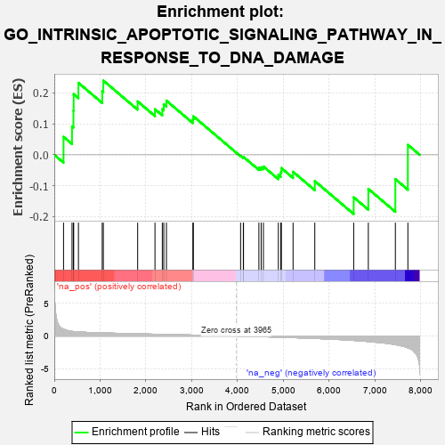
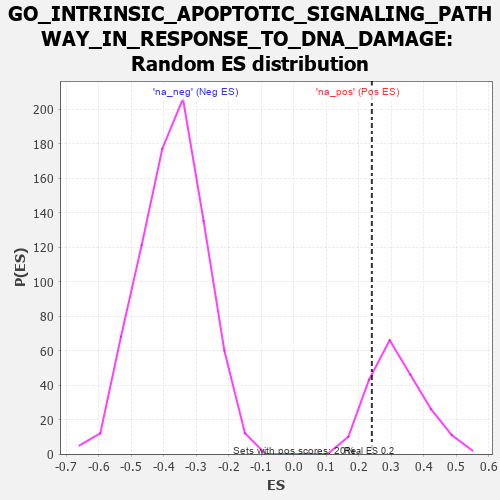

| | | Dataset | 7d |
| Phenotype | NoPhenotypeAvailable |
| Upregulated in class | na_pos |
| GeneSet | GO_INTRINSIC_APOPTOTIC_SIGNALING_PATHWAY_IN_RESPONSE_TO_DNA_DAMAGE |
| Enrichment Score (ES) | 0.24024835 |
| Normalized Enrichment Score (NES) | 0.74874926 |
| Nominal p-value | 0.8480392 |
| FDR q-value | 0.93979406 |
| FWER p-Value | 1.0 |
Table: GSEA Results Summary

Fig 1: Enrichment plot: GO_INTRINSIC_APOPTOTIC_SIGNALING_PATHWAY_IN_RESPONSE_TO_DNA_DAMAGE
Profile of the Running ES Score & Positions of GeneSet Members on the Rank Ordered List
| PROBE | GENE SYMBOL | GENE_TITLE | RANK IN GENE LIST | RANK METRIC SCORE | RUNNING ES | CORE ENRICHMENT | | 1 | BCL3 | | | 202 | 1.047 | 0.0583 | Yes |
| 2 | BAX | | | 387 | 0.711 | 0.0919 | Yes |
| 3 | RAD9A | | | 418 | 0.681 | 0.1426 | Yes |
| 4 | MLH1 | | | 423 | 0.679 | 0.1963 | Yes |
| 5 | HTRA2 | | | 527 | 0.621 | 0.2329 | Yes |
| 6 | TAF9 | | | 1046 | 0.475 | 0.2057 | Yes |
| 7 | XPA | | | 1070 | 0.469 | 0.2402 | Yes |
| 8 | MSH2 | | | 1819 | 0.334 | 0.1727 | No |
| 9 | ATAD5 | | | 2197 | 0.277 | 0.1474 | No |
| 10 | MIF | | | 2357 | 0.252 | 0.1475 | No |
| 11 | HIPK2 | | | 2389 | 0.247 | 0.1634 | No |
| 12 | KDM1A | | | 2447 | 0.237 | 0.1751 | No |
| 13 | BRCA2 | | | 3024 | 0.146 | 0.1143 | No |
| 14 | PIAS4 | | | 3034 | 0.145 | 0.1247 | No |
| 15 | SFRP2 | | | 4065 | -0.018 | -0.0035 | No |
| 16 | ABL1 | | | 4125 | -0.027 | -0.0088 | No |
| 17 | MSH6 | | | 4129 | -0.028 | -0.0069 | No |
| 18 | ERCC6 | | | 4464 | -0.087 | -0.0420 | No |
| 19 | SNW1 | | | 4514 | -0.096 | -0.0405 | No |
| 20 | BAG6 | | | 4563 | -0.108 | -0.0379 | No |
| 21 | CLU | | | 4889 | -0.174 | -0.0649 | No |
| 22 | EP300 | | | 4941 | -0.186 | -0.0564 | No |
| 23 | PRKDC | | | 4955 | -0.189 | -0.0429 | No |
| 24 | ATM | | | 5210 | -0.249 | -0.0550 | No |
| 25 | CDIP1 | | | 5684 | -0.370 | -0.0849 | No |
| 26 | DYRK2 | | | 6533 | -0.677 | -0.1375 | No |
| 27 | AEN | | | 6852 | -0.842 | -0.1103 | No |
| 28 | CASP2 | | | 7442 | -1.322 | -0.0787 | No |
| 29 | BOK | | | 7715 | -1.817 | 0.0322 | No |
Table: GSEA details [plain text format]

Fig 2: GO_INTRINSIC_APOPTOTIC_SIGNALING_PATHWAY_IN_RESPONSE_TO_DNA_DAMAGE: Random ES distribution
Gene set null distribution of ES for GO_INTRINSIC_APOPTOTIC_SIGNALING_PATHWAY_IN_RESPONSE_TO_DNA_DAMAGE